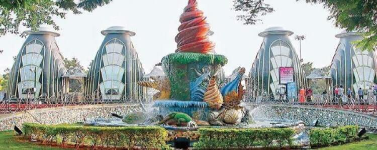

NTR Gardens
NTR Gardens, named after former Chief Minister of Andhra Pradesh N.T. Rama Rao, is a sprawling park in Hyderabad. It features a variety of plants, a Japanese garden, and a souvenir complex.
Location: Hyderabad, Telangana, India
Ticket Price: INR 20 per person (entry fee), additional charges for attractions like toy train
Transportation: Accessible by road, well-connected by local buses and taxis. Nearest metro station is Necklace Road.